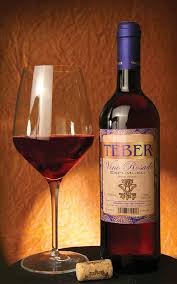

ALMUDES
5 Almudes Tempranillo es un vino elaborado a partir de la selección del viñedo de más edad de Tempranillo de la Bodega. Es vino joven, fresco y agradable. +MORE
TEBER
La primera es la habitual y se basa en que si la uva tiene cáscara roja, seguro esa varietal puede hacer un vino rosado. Con la sola inmersión de las cáscaras por una hora, el vino resultante será de color rosado. La segunda manera se basa en “sangrar” vino tinto de otra variedad al vino blanco. +MORE
FINCA ROJA

De color rojo con tonos ladrillo, que muestran su evolución. En nariz se presentan notas de frutas acomplejadas con su paso en barrica. Boca suave y voluminosa con un final largo y placentero. +MORE